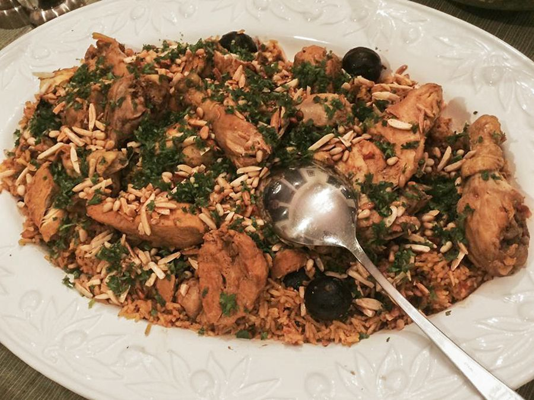

Al kabsa was the first Arabic dish I ever made. It turned out extremely delicious and is a new favorite. Serve with fresh mixed cucumber, carrot, lettuce, and tomato salad — preferably with a little lime vinaigrette. Some fresh pita bread on the side would also be nice. Saudis like their kabsa with a hot sauce called shattah. Enjoy!
Here is my secret recipe for the Kabsa: